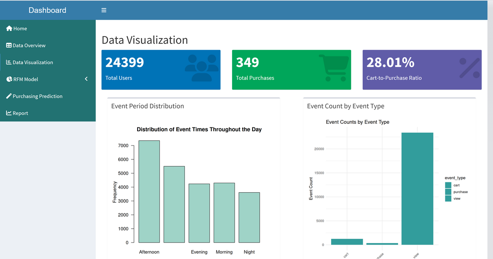
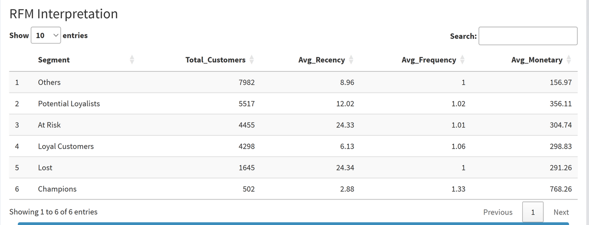
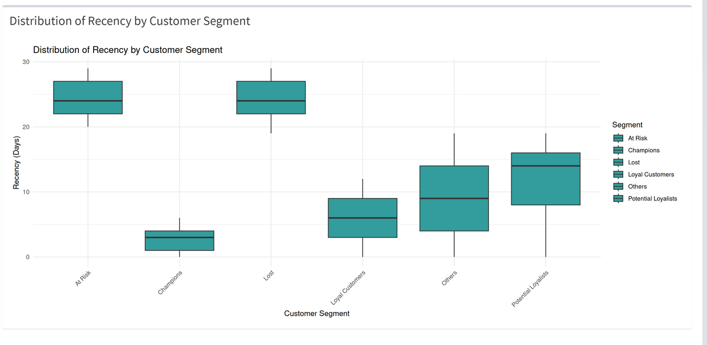

Retour aux projets
Segmentation client RFM
Une application R / Shiny sur le comportement d'achat e-commerce, du nettoyage des données jusqu'à la restitution Power BI.
Le projet
0
clients segmentés
0
segments RFM
0
du panier à l'achat
Analyse R / Shiny
Clients par segment
Autres
7982
Loyalistes pot.
5517
À risque
4455
Clients fidèles
4298
Perdus
1645
Champions
502
Panier moyen par segment
Champions
768
Loyalistes pot.
356
À risque
305
Clients fidèles
299
Perdus
291
Autres
157
Résultats réels de l'application, sur le jeu de données d'un client fictif.



Restitution Power BI
De la vue à l'achat
Vues
19,29 M
Paniers
0,96 M
Achats
0,34 M
1,8 % de conversion de la vue à l'achat. La perte se joue avant la mise au panier.
Les événements dans la journée
Matin
38,6 %
Après-midi
30,2 %
Soirée
18,3 %
Après minuit
13,0 %
- Près de 70 % de l'activité tient dans la matinée et l'après-midi : c'est la fenêtre à privilégier pour les campagnes et les tests de prix.
- Les 502 Champions dépensent en moyenne 768 contre 157 pour le segment « Autres », près de cinq fois plus. C'est la cible de fidélisation prioritaire.
Prédiction d'achat (random forest)
0.00
score F1
0.00
rappel
0.00
précision
- Les achats représentent environ 1 % des sessions. Un modèle qui répondrait toujours « pas d'achat » atteindrait déjà 98,6 % d'exactitude, donc le tableau de bord affiche l'exactitude à côté de cette référence et retient le F1.
- À 95,0 %, le modèle reste sous cette référence : pas encore de gain prédictif réel. Une première version atteignait 99,98 % grâce à des variables qui contenaient déjà la réponse ; elles ont été retirées et le diagnostic se poursuit.